The Ribbon Window will provide Office 2007 look and feel, when hosted in any application. The following code demonstrates the usage of Ribbon Window in application. RibbonWindow control is inherited from WindowControl (Syncfusion.Shared.Silverlight).
1.1.1.1.1.1.57 Methods
|
Name |
Description |
Return Type |
Overloads |
Reference Link |
|
Show() |
Opens a Ribbon Window. |
Null |
- |
|
|
Close() |
Close the Ribbon Window. |
Null |
- |
1.1.1.1.1.1.58 Properties
|
Name |
Type |
Value it accepts |
Description |
Default Value |
Reference Link |
|
WindowState |
Enum |
Normal, Minimize, Maximize
|
Represents the state of the window. It might be normal, minimized or maximized. |
Normal |
|
|
WindowStartUpLocation |
Enum |
CenterScreen, CenterOwner, Manual |
Represents the Startup location of the window. It might be Center Screen, Center Owner or manual. |
CenterScreen |
|
|
Title |
String |
String |
Represents the title displays at the top of the element. |
Untitled |
|
|
ResizeMode |
Enum |
CanResize, CanResizeWithGrip, CanMinimize, CanMaximize, Noresize |
Represents the resizing mode of RibbonWindow Control. It can be CanResize, NoResize, CanMinimize, CanMaximize or CanResizeWithGrip. |
CanResize |
1.1.1.1.1.1.59 Events
|
Name |
Event Type |
Event Args Parameter |
Description |
Reference Link |
|
Opened |
RoutedEventHandler |
RoutedEventArgs |
Occurs after the RibbonWindow Opened |
|
|
Opening |
CancelEventHandler |
CancelEventArgs |
Occurs before the RibbonWindow Opened |
|
|
Closed |
RoutedEventhandler |
RoutedEventArgs |
Occurs after the RibbonWindow is closed. |
|
|
Closing |
CancelEventHandler |
CancelEventArgs |
Occurs before the RibbonWindow closed. |
|
|
OnWindowStateChanged |
PropertyChangedCallBack |
PropertyChangedEventArgs |
Occurs on Window State Changed. |
|
|
ContextMenuOpened |
RoutedEventHandler |
RoutedEventArgs |
Occurs on Context MenuOpened |
|
|
ContextMenuClosed |
RoutedEventHandler |
RoutedEventArgs |
Occurs on ContextMenuClosed |
The Ribbonwindow exposes the following events.
The event occurs before the instance opens
|
XAML
<sync:RibbonWindow Opening="WindowControl_Opening"/> |
|
C#
RibbonWindow window = new RibbonWindow(); window.Opening+=new RoutedEventHandler(window_Opening); |
The event occurs after the instance opens.
|
XAML
<sync:RibbonWindow Opened="WindowControl_Opened"/> |
|
C#
RibbonWindow window = new RibbonWindow(); window.Opened+=new RoutedEventHandler(window_Opened); |
The event occurs before the instance closes.
|
XAML
<sync:RibbonWindow Closing="WindowControl_Closing"/> |
|
C#
RibbonWindow window = new RibbonWindow(); window.Closing+=new ClosedEventHandler(window_Closing); |
The event occurs after the instance closes.
|
XAML
<sync:RibbonWindow Closed="WindowControl_Closed"/> |
|
C#
RibbonWindow window = new RibbonWindow(); window.Closed+=new ClosedEventHandler(window_Closed); |
1.1.1.1.1.1.59.5 OnWindowStateChanged
The event occurs when the window state changes.
|
XAML
<sync:RibbonWindow OnWindowStateChanged="WindowControl_OnWindowStateChanged"/> |
|
C#
RibbonWindow window = new RibbonWindow(); window.OnWindowStateChanged+=new PropertyChangedCallback(window_OnWindowStateChanged); |
1.1.1.1.1.1.59.6 ContextMenuOpened
The event occurs when the Context Menu opens.
|
XAML
<sync:RibbonWindow ContextMenuOpened="WindowControl_ContextMenuOpened"/> |
|
C#
RibbonWindow window = new RibbonWindow(); window.ContextMenuOpened+=new RoutedEventHandler(window_ContextMenuOpened); |
1.1.1.1.1.1.59.7 ContextMenuClosed
The event occurs when Context Menu Closes.
|
XAML
<sync:RibbonWindow ContextMenuClosed="WindowControl_ContextMenuClosed"/> |
|
C#
RibbonWindow window = new RibbonWindow(); window.ContextMenuClosed+=new RoutedEventHandler(window_ContextMenuClosed); |
|
XAML
<syncfusion:RibbonWindow xmlns="http://schemas.microsoft.com/winfx/2006/xaml/presentation" xmlns:x="http://schemas.microsoft.com/winfx/2006/xaml" Title="Ribbon Window" xmlns:syncfusion="clr-namespace:Syncfusion.Windows.Tools.Controls;assembly=Syncfusion.Ribbon.Silverlight" x:Class="RibbonSample.RibbonDemo" Width="500" Height="450"> </syncfusion:RibbonWindow> |
|
C#
RibbonDemo demo = new RibbonDemo(); demo.Show(); |
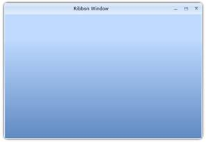
Figure 616: A typical Ribbon Window
1.1.1.1.1.1.60 Show RibbonWindow Control
The RibbonWindow Control can be shown using Show().
Show() – Shows the RibbonWindow normally.
|
C#
RibbonWindow window = new RibbonWindow(); window.Title = "Ribbon Window Demo"; window.Show(); |
1.1.1.1.1.1.61 Close RibbonWindow Control
The window instance can be closed by pressing the close button or by calling the Close() method.
|
C#
WindowDemo window = new WindowDemo(); window.Close(); |
1.1.1.1.1.1.62 RibbonWindow Position
The position of the RibbonWindow can be controlled by the user by setting the property. WindowStartUpLocation. The Enum takes the following values:
· CenterScreen – RibbonWindow will appear at the center of the screen.
· Manual - The location of the window can be controlled by Top and Left properties.
The property can be set as follows:
1.1.1.1.1.1.62.1 Center Screen
|
XAML
<syncfusion:RibbonWindow x:Name="windowControl" Height="465" Width="800"> |
|
C#
RibbonWindowControl window = new RibbonWindowControl() { Height = 465, Width = 800 }; |
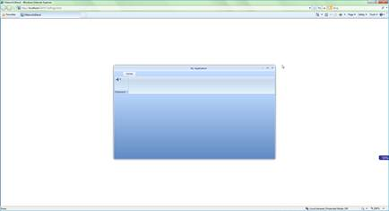
Figure 617: RibbonWindow appears in the Center of the Screen
|
XAML
<syncfusion:RibbonWindow x:Name="windowControl" Height="450" Width="800"> |
|
C#
RibbonWindowControl window = new RibbonWindowControl() { Height = 465, Width = 800 }; |
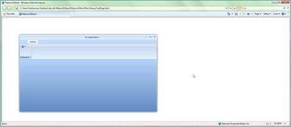
Figure 618: RibbonWindow appears Top position at 100 and Left at 100
The RibbonWindow control can be positioned manually, using the properties Top and Left. The following code snippet explains the making of cascade windows using the properties Top and Left.
|
XAML
<sync:RibbonWindow x:Name="RibbonDemo" x:Class="Syncfusion.Tools.Silverlight.Samples.RibbonDemo" xmlns="http://schemas.microsoft.com/winfx/2006/xaml/presentation" xmlns:x="http://schemas.microsoft.com/winfx/2006/xaml" Title="Ribbon Window" xmlns:sync="clr-namespace:Syncfusion.Windows.Tools.Controls;assembly=Syncfusion.Ribbon.Silverlight" Height="465" Width="800"> </sync:RibbonWindow> |
|
C#
RibbonDemo window = new RibbonDemo(); window.Title = "Ribbon Window"; |
Figure 619: RibbonWindow control with Title
 Note: RibbonWindow Control should not add as a
Child of any Control. It should be a UserControl as shown above.
Note: RibbonWindow Control should not add as a
Child of any Control. It should be a UserControl as shown above.
The Resizing capability of the RibbonWindow Control can be controlled using the ResizeMode property. The Enumeration takes the following values:
· CanResize
· NoResize
· CanResizeWithGrip
· CanMinimize
· CanMaximize
1.1.1.1.1.1.64.1 CanResize
This is the default Resize Mode of the RibbonWindow Control. Setting this value enables the user to resize the RibbonWindow Control in all aspects.
|
XAML
<syncfusion:RibbonWindow x:Name="windowControl" xmlns:syncfusion="clr-namespace:Syncfusion.Windows.Tools.Controls;assembly=Syncfusion.Ribbon.Silverlight"
Height="450" Width="800"> |
|
C#
RibbonWindowControl window = new RibbonWindowControl() { Height = 350, Width = 400 }; |
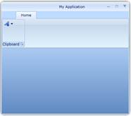
Figure 620: Resizable RibbonWindow Control
Setting this value disables the Resizing behavior of RibbonWindow Control.
|
XAML
<syncfusion:RibbonWindow x:Name="windowControl" xmlns:syncfusion="clr-namespace:Syncfusion.Windows.Tools.Controls;assembly=Syncfusion.Ribbon.Silverlight"
Height="450" Width="800"> |
|
C#
RibbonWindowControl window = new RibbonWindowControl() { Height = 350, Width = 400 }; |
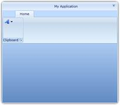
Figure 621: RibbonWindow Control without Resizing behavior
1.1.1.1.1.1.64.3 Can Minimize
Setting this value disables the Maximize button, so that the user cannot maximize the window.
|
XAML
<syncfusion:RibbonWindow x:Name="windowControl" xmlns:syncfusion="clr-namespace:Syncfusion.Windows.Tools.Controls;assembly=Syncfusion.Ribbon.Silverlight"
Height="450" Width="800"> |
|
C#
RibbonWindowControl window = new RibbonWindowControl() { Height = 350, Width = 400 }; |
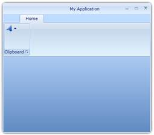
Figure 622: RibbonWindow Control with Maximize button disabled
1.1.1.1.1.1.64.4 CanMaximize
Setting this value disables the Minimize button.
|
XAML
<syncfusion:RibbonWindow x:Name="windowControl" xmlns:syncfusion="clr-namespace:Syncfusion.Windows.Tools.Controls;assembly=Syncfusion.Ribbon.Silverlight"
Height="450" Width="800"> |
|
C#
RibbonWindowControl window = new RibbonWindowControl() { Height = 350, Width = 400 }; |
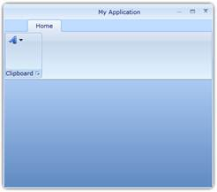
Figure 623: RibbonWindow with Minimize button Disabled
The state of the windows can be controlled by the property WindowState. The Enum takes the following values:
· Normal
· Minimized and
· Maximized
1.1.1.1.1.1.65.1 Normal
This is the default state of the RibbonWindow.
|
XAML
<sync:RibbonWindow x:Name="RibbonWindowControl" x:Class="Syncfusion.RibbonWindowControl" xmlns="http://schemas.microsoft.com/winfx/2006/xaml/presentation" xmlns:x="http://schemas.microsoft.com/winfx/2006/xaml" Title="Ribbon Window Demo" WindowStartupLocation="CenterScreen" ResizeMode="CanMaximize" xmlns:sync="clr-namespace:Syncfusion.Windows.Tools.Controls;assembly=Syncfusion.Ribbon.Silverlight" Height="465" Width="800" WindowState="Normal"> </sync:RibbonWindow> |
|
C#
RibbonWindowControl window = new RibbonWindowControl(); window.Title = "Ribbon Window Demo"; window.WindowStartupLocation = Syncfusion.Windows.Tools.Controls.WindowStartupLocation.CenterScreen; window.ResizeMode = ResizeMode.CanMaximize; window.WindowState = Syncfusion.Windows.Tools.Controls.WindowState.Normal; |
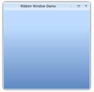
Figure 624: A normal RibbonWindow Control
1.1.1.1.1.1.65.2 Minimized
Setting the value hosts the RibbonWindow Control in the minimized State.
|
XAML
<sync:RibbonWindow x:Name="RibbonWindowControl" x:Class="Syncfusion.RibbonWindowControl" xmlns="http://schemas.microsoft.com/winfx/2006/xaml/presentation" xmlns:x="http://schemas.microsoft.com/winfx/2006/xaml" Title="Ribbon Window Demo" WindowStartupLocation="CenterScreen" ResizeMode="CanMaximize" xmlns:sync="clr-namespace:Syncfusion.Windows.Tools.Controls;assembly=Syncfusion.Ribbon.Silverlight" Height="465" Width="800" WindowState="Minimized"> </sync:RibbonWindow> |
|
C#
RibbonWindowControl window = new RibbonWindowControl(); window.Title = "Ribbon Window Demo"; window.WindowStartupLocation = Syncfusion.Windows.Tools.Controls.WindowStartupLocation.CenterScreen; window.ResizeMode = ResizeMode.CanMaximize; window.WindowState = Syncfusion.Windows.Tools.Controls.WindowState.Minimized; |
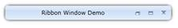
Figure 625: RibbonWindow Control with Minimized state
1.1.1.1.1.1.65.3 Maximized
Setting the value hosts the RibbonWindow Control in the Maximized state.
|
XAML
<sync:RibbonWindow x:Name="RibbonWindowControl" x:Class="Syncfusion.RibbonWindowControl" xmlns="http://schemas.microsoft.com/winfx/2006/xaml/presentation" xmlns:x="http://schemas.microsoft.com/winfx/2006/xaml" Title="Ribbon Window Demo" WindowStartupLocation="CenterScreen" ResizeMode="CanMaximize" xmlns:sync="clr-namespace:Syncfusion.Windows.Tools.Controls;assembly=Syncfusion.Ribbon.Silverlight" Height="465" Width="800" WindowState="Maximized"> </sync:WindowControl> |
|
C#
RibbonWindowControl window = new RibbonWindowControl(); window.Title = "Ribbon Window Demo"; window.WindowStartupLocation = Syncfusion.Windows.Tools.Controls.WindowStartupLocation.CenterScreen; window.ResizeMode = ResizeMode.CanMaximize; window.WindowState = Syncfusion.Windows.Tools.Controls.WindowState.Maximized; |
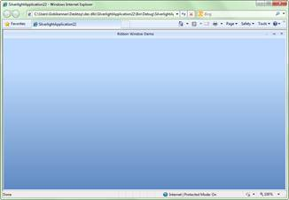
Figure 626: Maximized RibbonWindow Control
The template of RibbonWindow Control can be easily editable in Expression Blend, to give a nice look and feel. The following steps should be followed to edit the template in Expression Blend:
· Open the Sample in Expression Blend. Right-click the RibbonWindow Control and Choose the Edit Template option as shown below:
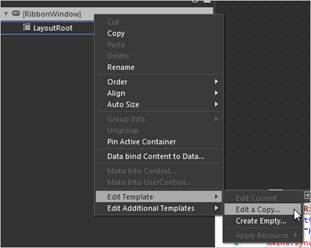
Figure 627: Edit Style for RibbonWIndow
· A window will appear as shown below. Click OK to create a new style for the RibbonWindow Control.
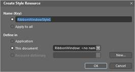
Figure 628: Add Style Name for RibbonWIndow
· All the resources will be displayed on the resources pane on the right side of the Design area. These resources can be editable to create a new style.
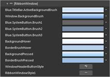
Figure 629: Default Resoources for RibbonWIndow
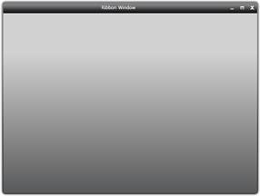
Figure 630: RibbonWindow Control style edited using Expression Blend.